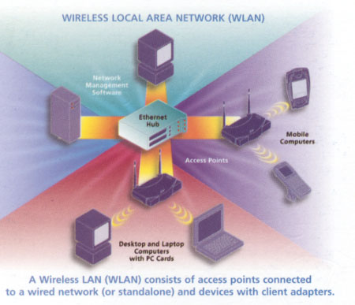

In the past, some browsers didn’t support 100% graphics, when users tried to see them on their screen, the only thing they saw was text. An expression like [IMAGE] replaces the graphic. You may be able to get them understand what kind of graphic you inserted.
This is achieved by using an extended version of the <img> tag. The <alt> tag allows you to include a description of the graphic. This descriptive copy substitutes for the graphic. It is a good idea to do this for all graphics.

Click the picture to see a message "This is the definition of Wireless Local Area Network."